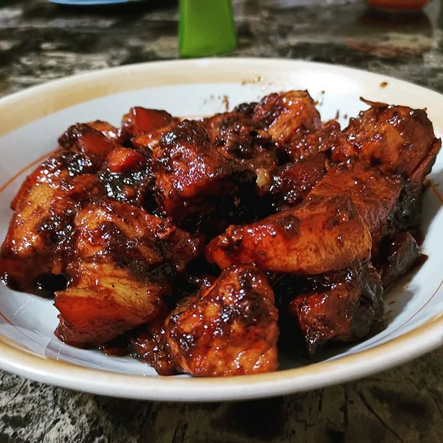

Adobong Baboy

Adobong Baboy / Pork Adobo
Adobong Baboy This is a recipe post for Filipino
Pork Adobo. It is a dish composed of pork slices cooked in soy sauce,
vinegar, and garlic. There are version wherein onions are also added.
Adobo is a popular dish in the Philippines, along with Sinigang.
Pork Adobo Recipe
Basic Filipino Prok Adobo with Soy Sauce, Vinegar, and Garlic. This
delicious dish is perfect when served over newly cooked white rice.
Ingredients
- 2 lbs pork belly
- 2 tablespoons garlic minced or crushed
- 5 pieces dried bay leaves
- 4 tablespoons vinegar
- 1/2 cup soy sauce
- 1 tablespoon peppercorn
- 2 cups water
- Salt to taste
Instructions
-
Combine the pork belly, soy sauce, and garlic then marinade for at least
1 hour
-
Heat the pot and put-in the marinated pork belly then cook for a few
minutes
- Pour remaining marinade including garlic
-
Add water, whole pepper corn, and dried bay leaves then bring to a boil
Simmer for 40 minutes to 1 hour
- Put-in the vinegar and simmer for 12 to 15 minutes
- Add salt to taste
- Serve Hot.Share and Enjoy
Back To Top
Back To Main Menu